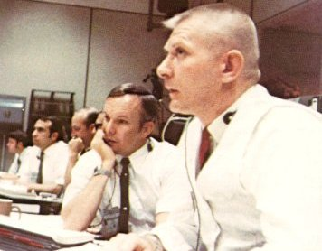
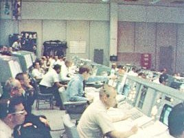
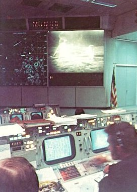

| Mission Control candid photography by Andrew R. Patnesky |
|  |
| Flight Director Gene Kranz watches his console display tensely as the Apollo 11 lunar module Eagle slowly settles down with its descent engine fuel supply all but exhausted. Gerry Griffin, a Flight Director during other phases of the mission, looks on in complete absorption. |
|  | As the Apollo 11 lunar module begins the descent toward its historic touchdown, off-duty Operations Team members watch unobtrusively from a few extra chairs in the Mission Operations Control Room. |
|  | A television monitor at the front of the Mission Operations Control Room displays real-time images of Astronauts Armstrong and Aldrin at work on the Moon. |